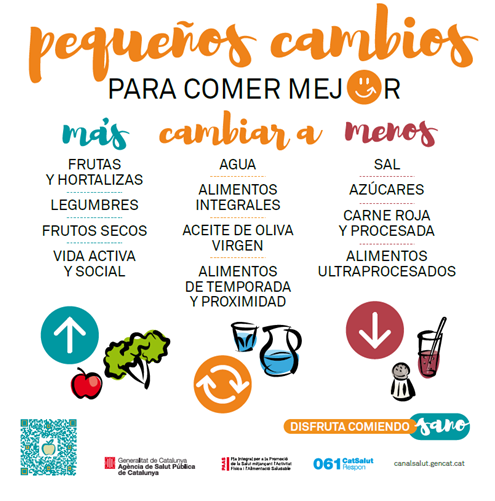

En esta actividad, vais a partir del menú ideal que habéis diseñado en la etapa 1 y vais a hacer las modificaciones necesarias para convertirlo en un menú saludable. Podéis seguir la rúbrica de valoración que encontráis en esta página para saber que se os pide concretamente.
¿Estáis preparados?
